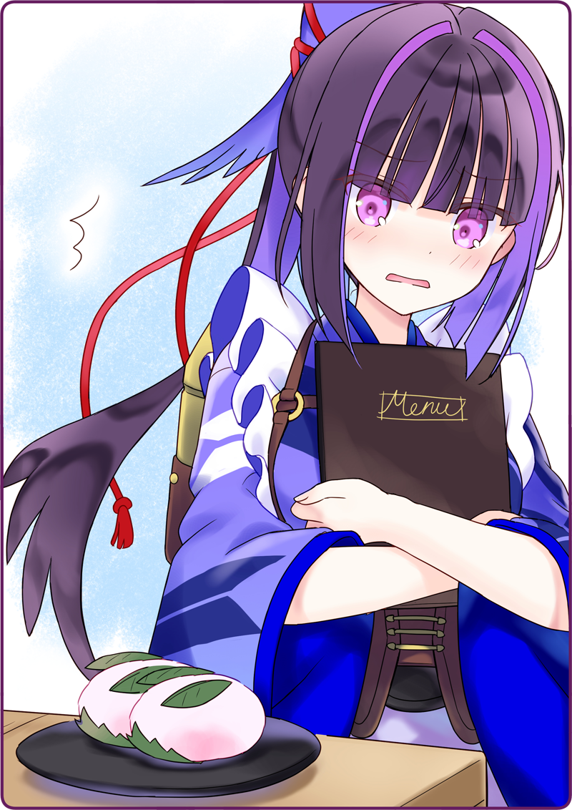

宇佐美「ですから……鴉羽さんが鍵を忘れていたので、届けに来たんです」
鴉羽さんの笑顔をまっすぐ見ることが出来ず、俯きながら答える。
支配人「あたしが店に入れたんだよ」
支配人「店の中ではママと呼びな！」
いつも黒猫亭でリーダーとして凛としている鴉羽さんが、押されている。
とても珍しいことだけど、見ちゃいけない光景にも思えた。
灰桜「あの、鴉羽さん！ さっきのショー、とても素敵でした！」
支配人「ああ、なにせ一番弟子だからね。当時は状況が状況だったから店には出せなかったけど……本当なら看板を任せたかったぐらいさ」
灰桜「凄いです！」
支配人「鴉羽。飲み物をお出しして」
支配人さんがボクのグラスを指差す。
支配人「いいじゃないか、あたしの客さ」
鴉羽さんは恨めしそうな顔でボクを睨みながら、空いたグラスに氷を入れてオレンジジュースを注ぐ。
支配人「最初はこの子も融通が利かないというか、不器用でね」
支配人「でも、健気だったわ。黒猫亭のために出来ることを何でも学びたいって言ってね……だから私も本気になったってわけさ」
支配人「だけど、素直じゃ無いのは変わらないだろ？ だからあんたたちに言っておいてやるよ」
支配人さんはボクと灰桜の方を真っ直ぐ見る。
支配人「今、黒猫亭があるのは、鴉羽がそうやって頑張って居場所を守ろうとしたからさ」
支配人「練習に付き合ってくれてありがとうね。本当は開店のステージに上がって欲しいぐらいなんだけど……」
支配人「つれないねぇ」
支配人「可愛いじゃないか」
鴉羽さんは顔を真っ赤にしながら、背嚢の煙突から蒸気を噴き出させた。
こんな鴉羽さんを見るのも初めてだけど、この光景はなんだか温かな物に見えた。
バニー「皆さん、こちら召し上がって下さぁい」
甘酸っぱい香りが広がる。
ショーガールのお姉さんが、フルーツの盛られたガラスのお皿を届けてくれた。
宇佐美「あれ？」
支配人「うちのフルーツは新鮮だろう？」
宇佐美「いえ、このカッティングの仕方、黒猫亭のメニューと同じだと思って」
支配人「そうなのかい？」
宇佐美「黒猫亭のフルーツの盛り合わせは、鴉羽さんが提案したメニュー……」
支配人「ほお。そういえば、フルーツの切り方もみっちり仕込んであげたねぇ」
宇佐美「確か、思い出に残しておきたいから……ですよね？」
支配人「まったく……この子は素直じゃ無いよ」
宇佐美「その頃の鴉羽さんは愛くるしかったって月下が言ってましたけど、どういうことでしょうか？」
支配人「ん？ ああ、たぶんこの格好のことだろうね」
支配人さんがポーチの中から、おもむろに１枚の写真を取りだしてこちらに見せた。
鴉羽さんがその写真を取り上げようと飛びつくより先に、支配人さんはボクと灰桜に手渡す。
支配人「それはダンスを練習中の一枚さ。私は形から入る方だからね」
灰桜「おおー、これが鴉羽さんですかー」
宇佐美「なるほど、愛くるしいですね」
写真には、バニースーツを身に纏った鴉羽さんが支配人さんと写っていた。
照れたような、でも自然な笑みを浮かべて。
灰桜「黒猫亭は、この兎羽（うさぎば）さんに守られてきたんですね」
宇佐美「でも、とても似合ってますよ。ボクは好きだなぁ……」
鴉羽さんが力なくさめざめと泣いていた。
人に歴史あり。人形にも歴史ありだと、思った。
＊ ＊ ＊
翌日──
宇佐美「できた。これでどう？ 灰桜」
お皿の上にのせた、一口サイズの桜餅を灰桜に見せる。
桜餅だけど、桜の葉っぱでお餅を巻いてはいない。
桜の葉っぱは、楕円にカットして『耳』に見立ててお餅にさしている。
さらに、桜の花びらを丸くカットしたものを『目』に見立ててある。
灰桜「これはとても愛くるしいウサギさんです！ 食べるのがかわいそうなくらい可愛いできばえです」
発案者の灰桜も満足してくれたようだ。
灰桜の声に、鴉羽さんが厨房へやってくる。
昨夜のことはまるで忘れたかのように、いつも通りの鴉羽さんだ。
灰桜「鴉羽さん！ 見てください、新メニューです」

灰桜「はい！ 黒猫亭のこれまでに欠かせないうさぎさんです」
灰桜「はい！ 鴉羽さんをイメージした新メニューの甘味です」
月下「採用に１票であります」
いつの間にか厨房に来ていた月下が冷静に賛成票をくれた。
おとめ「可愛いじゃないか。これまでの黒猫亭にはないまさに新メニューだ。採用しよう」
奥宮さんも、厨房の横を通り過ぎざまに桜餅をみて、声をかけてくれた。
宇佐美「ボクも一票。あ、箒星さんにも見せたんですけど「素敵ですねぇ」と言ってました」
鴉羽さんは泣きそうな顔で、ボクを見る。
たぶん、無駄だろうと分かっていても、すがるようにボクを見ている。
うん、それはやっぱり無駄なんだよと、ボクは静かに頷く。
宇佐美「じゃあ、新メニューはこれで決まりということで」
灰桜「はい！ わたし、お役にたてました！」
鴉羽さんの叫び声が黒猫亭に響く中。
月下は早速メニュー表に、新メニューを書き込んでいた。
『黒猫亭のうさぎ』と。

 「どどどどどどうしてあなたたちがここにいるのよ！？！？」
「どどどどどどうしてあなたたちがここにいるのよ！？！？」